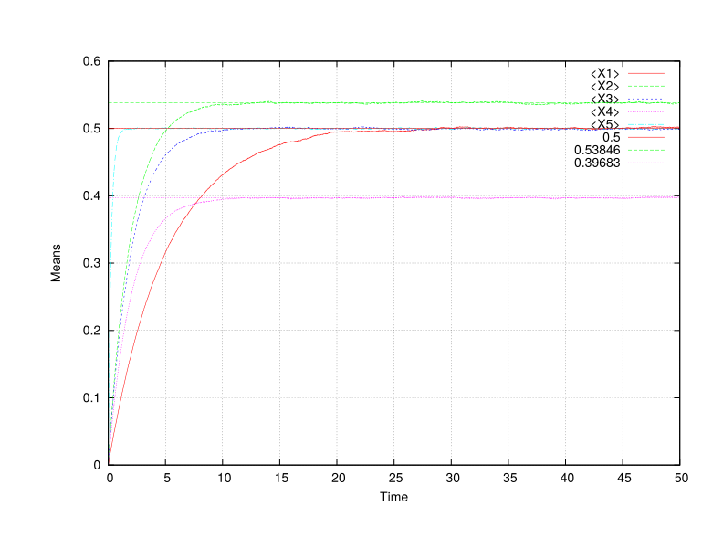
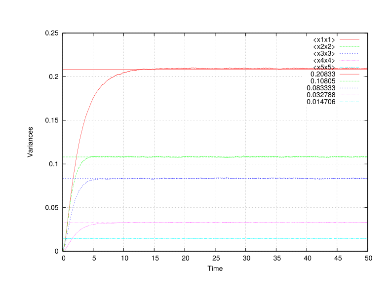
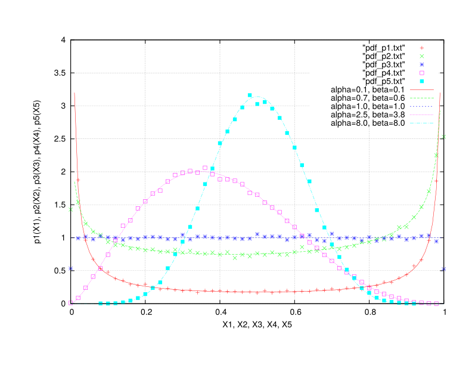

|
Quinoa
Adaptive computational fluid dynamics
|
|
Quinoa
Adaptive computational fluid dynamics
|
This example runs walker to integrate the beta SDE (see DiffEq/Beta.h) using constant coefficients. For more detail on the beta SDE, see http://dx.doi.org/10.1080/14685248.2010.510843.
title "Example problem"
walker
#nstep 1 # Max number of time steps
term 50.0 # Max time
dt 0.005 # Time step size
npar 100000 # Number of particles
ttyi 1000 # TTY output interval
rngs
mkl_r250 end
end
beta
depvar x
ncomp 5
init zero
coeff const
# alpha = Sb/kappa, beta = (1-S)b/kappa
# S = 1/(1+\beta/alpha), delta = S/alpha = kappa/b
kappa 2.0 0.76923 0.5 0.15873 0.5 end
b 0.4 1.0 1.0 1.0 8.0 end
S 0.5 0.53846 0.5 0.39683 0.5 end
rng mkl_r250
end
statistics
<X1> <X2> <X3> <X4> <X5>
<x1x1> <x1x2> <x1x3> <x1x4> <x1x5>
<x2x2> <x2x3> <x2x4> <x2x5>
<x3x3> <x3x4> <x3x5>
<x4x4> <x4x5>
<x5x5>
end
pdfs
interval 1000
filetype txt
policy overwrite
centering elem
format scientific
precision 4
p1( X1 : 2.0e-2 )
p2( X2 : 2.0e-2 )
p3( X3 : 2.0e-2 )
p4( X4 : 2.0e-2 )
p5( X5 : 2.0e-2 )
end
end
./charmrun +p4 Main/walker -v -c ../../tmp/beta.q -u 0.9
Running on 4 processors: Main/walker -v -c ../../tmp/beta.q
charmrun> /usr/bin/setarch x86_64 -R mpirun -np 4 Main/walker -v -c ../../tmp/beta.q
Charm++> Running on MPI version: 3.0
Charm++> level of thread support used: MPI_THREAD_SINGLE (desired: MPI_THREAD_SINGLE)
Charm++> Running in non-SMP mode: numPes 4
Converse/Charm++ Commit ID: b8b2735
CharmLB> Load balancer assumes all CPUs are same.
Charm++> Running on 1 unique compute nodes (4-way SMP).
Charm++> cpu topology info is gathered in 0.000 seconds.
,::,` `.
.;;;'';;;: ;;#
;;;@+ +;;; ;;;;;, ;;;;. ;;;;;, ;;;; ;;;; `;;;;;;: ;;;
:;;@` :;;' .;;;@, ,;@, ,;;;@: .;;;' .;+;. ;;;@#:';;; ;;;;'
;;;# ;;;: ;;;' ;: ;;;' ;;;;; ;# ;;;@ ;;; ;+;;'
.;;+ ;;;# ;;;' ;: ;;;' ;#;;;` ;# ;;@ `;;+ .;#;;;.
;;;# :;;' ;;;' ;: ;;;' ;# ;;; ;# ;;;@ ;;; ;# ;;;+
;;;# .;;; ;;;' ;: ;;;' ;# ,;;; ;# ;;;# ;;;: ;@ ;;;
;;;# .;;' ;;;' ;: ;;;' ;# ;;;; ;# ;;;' ;;;+ ;', ;;;@
;;;+ ,;;+ ;;;' ;: ;;;' ;# ;;;' ;# ;;;' ;;;' ;':::;;;;
`;;; ;;;@ ;;;' ;: ;;;' ;# ;;;';# ;;;@ ;;;:,;+++++;;;'
;;;; ;;;@ ;;;# .;. ;;;' ;# ;;;;# `;;+ ;;# ;# ;;;'
.;;; :;;@ ,;;+ ;+ ;;;' ;# ;;;# ;;; ;;;@ ;@ ;;;.
';;; ;;;@, ;;;;``.;;@ ;;;' ;+ .;;# ;;; :;;@ ;;; ;;;+
:;;;;;;;+@` ';;;;;'@ ;;;;;, ;;;; ;;+ +;;;;;;#@ ;;;;. .;;;;;;
.;;#@' `#@@@: ;::::; ;:::: ;@ '@@@+ ;:::; ;::::::
:;;;;;;. __ __ .__ __
.;@+@';;;;;;' / \ / \_____ | | | | __ ___________
` '#''@` \ \/\/ /\__ \ | | | |/ // __ \_ __ \
\ / / __ \| |_| <\ ___/| | \/
\__/\ / (____ /____/__|_ \\___ >__|
\/ \/ \/ \/
< ENVIRONMENT >
------ o ------
* Build environment:
--------------------
Hostname : sprout
Executable : walker
Version : 0.1
Release : LA-CC-XX-XXX
Revision : 3f859ba1503ba92b58d046fff04e913e4c5e81cc
CMake build type : DEBUG
Asserts : on (turn off: CMAKE_BUILD_TYPE=RELEASE)
Exception trace : on (turn off: CMAKE_BUILD_TYPE=RELEASE)
MPI C++ wrapper : /opt/openmpi/1.8/clang/system/bin/mpicxx
Underlying C++ compiler : /usr/bin/clang++-3.5
Build date : Sun Feb 8 06:44:07 MST 2015
* Run-time environment:
-----------------------
Date, time : Sun Feb 8 13:02:32 2015
Work directory : /home/jbakosi/code/quinoa/build/clang
Executable (rel. to work dir) : Main/walker
Command line arguments : '-v -c ../../tmp/beta.q'
Output : verbose (quiet: omit -v)
Control file : ../../tmp/beta.q
Parsed control file : success
< FACTORY >
---- o ----
* Particle properties data layout policy (CMake: LAYOUT):
---------------------------------------------------------
particle-major
* Registered differential equations:
------------------------------------
Unique equation types : 8
With all policy combinations : 18
Legend: equation name : supported policies
Policy codes:
* i: initialization policy: R-raw, Z-zero
* c: coefficients policy: C-const, J-jrrj
Beta : i:RZ, c:CJ
Diagonal Ornstein-Uhlenbeck : i:RZ, c:C
Dirichlet : i:RZ, c:C
Gamma : i:RZ, c:C
Generalized Dirichlet : i:RZ, c:C
Ornstein-Uhlenbeck : i:RZ, c:C
Skew-Normal : i:RZ, c:C
Wright-Fisher : i:RZ, c:C
< PROBLEM >
---- o ----
* Title: Example problem
------------------------
* Differential equations integrated (1):
----------------------------------------
< Beta >
kind : stochastic
dependent variable : x
initialization policy : Z
coefficients policy : C
start offset in particle array : 0
number of components : 5
random number generator : MKL R250
coeff b [5] : { 0.4 1 1 1 8 }
coeff S [5] : { 0.5 0.53846 0.5 0.39683 0.5 }
coeff kappa [5] : { 2 0.76923 0.5 0.15873 0.5 }
* Output filenames:
-------------------
Statistics : stat.txt
PDF : pdf
* Discretization parameters:
----------------------------
Number of time steps : 18446744073709551615
Terminate time : 50
Initial time step size : 0.005
* Output intervals:
-------------------
TTY : 1000
Statistics : 1
PDF : 1000
* Statistical moments and distributions:
----------------------------------------
Estimated statistical moments : <X1> <X2> <X3> <X4> <X5> <x1x1> <x1x2> <x1x3> <x1x4> <x1x5> <x2x2> <x2x3> <x2x4> <x2x5> <x3x3> <x3x4> <x3x5> <x4x4> <x4x5> <x5x5>
PDFs : p1(X1:0.02) p2(X2:0.02) p3(X3:0.02) p4(X4:0.02) p5(X5:0.02)
PDF output file type : txt
PDF output file policy : overwrite
PDF output file centering : elem
Text floating-point format : scientific
Text precision in digits : 4
* Load distribution:
--------------------
Virtualization [0.0...1.0] : 0
Load (number of particles) : 100000
Number of processing elements : 4
Number of work units : 4 (3*25000+25000)
* Time integration: Differential equations testbed
--------------------------------------------------
Legend: it - iteration count
t - time
dt - time step size
ETE - estimated time elapsed (h:m:s)
ETA - estimated time for accomplishment (h:m:s)
out - output-saved flags (S: statistics, P: PDFs)
it t dt ETE ETA out
---------------------------------------------------------------
1000 5.000000e+00 5.000000e-03 000:00:55 000:08:17 SP
2000 1.000000e+01 5.000000e-03 000:01:50 000:07:21 SP
3000 1.500000e+01 5.000000e-03 000:02:45 000:06:26 SP
4000 2.000000e+01 5.000000e-03 000:03:40 000:05:31 SP
5000 2.500000e+01 5.000000e-03 000:04:35 000:04:35 SP
6000 3.000000e+01 5.000000e-03 000:05:31 000:03:40 SP
7000 3.500000e+01 5.000000e-03 000:06:26 000:02:45 SP
8000 4.000000e+01 5.000000e-03 000:07:21 000:01:50 SP
9000 4.500000e+01 5.000000e-03 000:08:16 000:00:55 SP
10000 5.000000e+01 5.000000e-03 000:09:12 000:00:00 SP
Normal finish, maximum time reached: 50.000000
* Timers (h:m:s):
-----------------
Initial conditions : 0:0:0
Migration of global-scope data : 0:0:0
Total runtime : 0:9:12
[Partition 0][Node 0] End of program
The left figure shows the time evolution of the means estimated from the numerical simulation together with those of the invariant distributions. The right figure shows the time evolution of the variances and those of the invariant. Both plots indicate convergence to the correct statistically stationary state.


Gnuplot commands to reproduce the above plots:
plot "stat.txt" u 2:3 w l t "<X1>", "stat.txt" u 2:4 w l t "<X2>", "stat.txt" u 2:5 w l t "<X3>", "stat.txt" u 2:6 w l t "<X4>", "stat.txt" u 2:7 w l t "<X5>", 0.5 lt 1, 0.53846 lt 2, 0.39683 lt 4 plot "stat.txt" u 2:8 w l t "<x1x1>", "stat.txt" u 2:13 w l t "<x2x2>", "stat.txt" u 2:17 w l t "<x3x3>", "stat.txt" u 2:20 w l t "<x4x4>", "stat.txt" u 2:22 w l t "<x5x5>", 0.20833 lt 1, 0.10805 lt 2, 0.083333 lt 3, 0.032788 lt 4, 0.014706 lt 5
The left figure shows the 5 estimated PDFs at the final step of the simulation together with the corresponding invariants. The right figure shows the time evolution of the estimated covariances indicating no correlations at all times corresponding to the statistically independent equations integrated.


Gnuplot commands to reproduce the above plots:
plot [0:1] [0:4] "pdf_p1.txt", "pdf_p2.txt", "pdf_p3.txt", "pdf_p4.txt", "pdf_p5.txt", x**(0.1-1.0)*(1.0-x)**(0.1-1.0)/19.715 lt 1 t "a=0.1, b=0.1", x**(0.7-1.0)*(1.0-x)**(0.6-1.0)/2.1539 lt 2 t "a=0.7, b=0.6", x**(1.0-1.0)*(1.0-x)**(1.0-1.0)/1.0 lt 3 t "a=1.0, b=1.0", x**(2.5-1.0)*(1.0-x)**(3.8-1.0)/0.03092 lt 4 t "a=2.5, b=3.8", x**(8.0-1.0)*(1.0-x)**(8.0-1.0)/1.9425e-05 lt 5 t "a=8.0, b=8.0" plot [] [-0.003:0.003] "stat.txt" u 2:9 w l t "<x1x2>", "stat.txt" u 2:10 w l t "<x1x3>", "stat.txt" u 2:11 w l t "<x1x4>", "stat.txt" u 2:12 w l t "<x1x5>", "stat.txt" u 2:14 w l t "<x2x3>", "stat.txt" u 2:15 w l t "<x2x4>", "stat.txt" u 2:16 w l t "<x2x5>", "stat.txt" u 2:18 w l t "<x3x4>", "stat.txt" u 2:19 w l t "<x3x5>", "stat.txt" u 2:21 w l t "<x4x5>"
 1.8.9.1
1.8.9.1